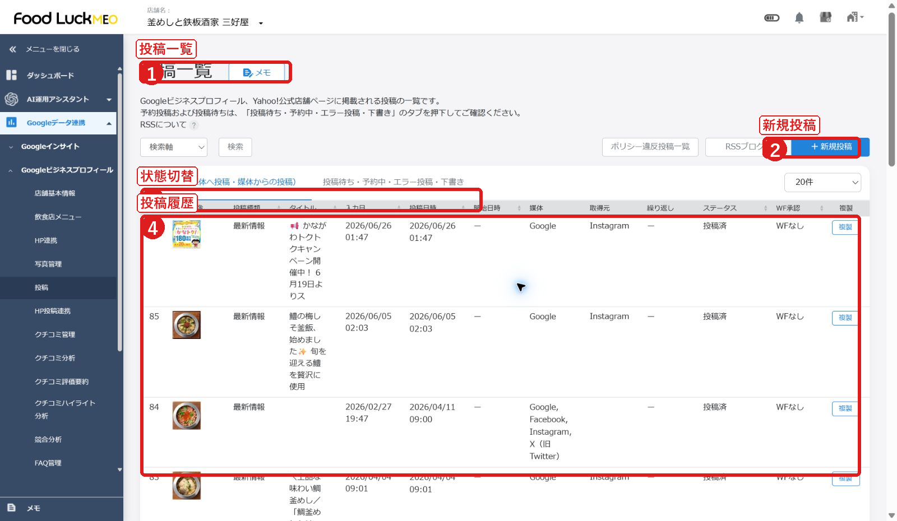
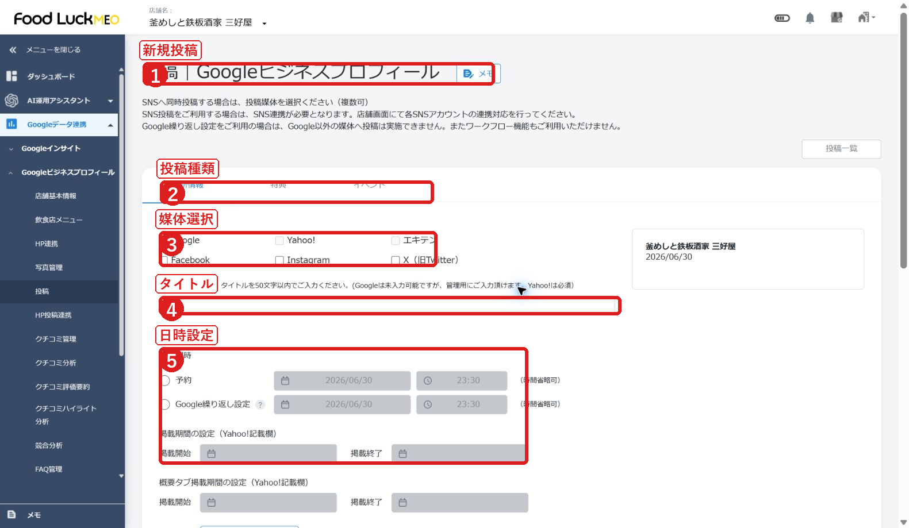
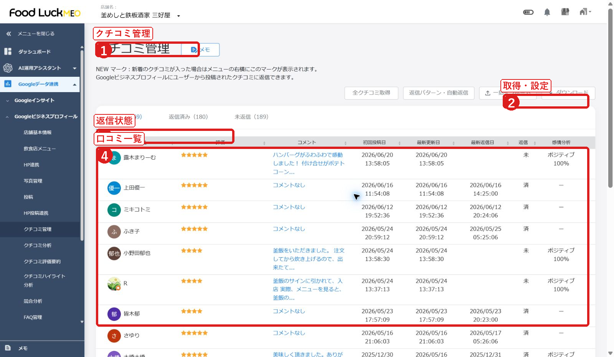

FoodLuck MEO 飲食店向け操作説明書
FAQ本文反映版 / 日常運用で使う内容を中心に再構成
| この版で反映したこと MEOダッシュボードFAQの本文を取得し、飲食店側の運用に必要な399記事分を確認しました。本文は丸写しではなく、店舗現場で使いやすい手順・注意点・判断基準として整理しています。 |
|---|
1. まず見るべき運用の流れ
FoodLuck MEOは、毎日すべての画面を見るものではありません。現場の負担を増やさず成果につなげるため、次の順番で確認してください。
| タイミング | 店舗で行うこと | 見る画面 |
|---|---|---|
| 毎週 | 新しい写真を追加し、未返信クチコミを確認します。投稿ネタがあれば最新情報を出します。 | 写真管理 / 投稿 / クチコミ管理 |
| 毎月 | 検索数、電話、ルート、Webクリック、順位の変化を見ます。良かった投稿や写真を振り返ります。 | インサイト / 順位チャート |
| 変更時 | 営業時間、臨時休業、メニュー、予約リンク、電話番号などを更新します。 | 店舗基本情報 / 飲食店メニュー |
| 困った時 | 投稿エラー、写真削除、クチコミ反映、インサイトの0表示などを確認します。 | 各一覧のステータス / FAQ参照 |
| FoodLuck側で対応する項目 Google連携、再連携、ユーザー権限、複数店舗一括設定、外部媒体連携、Yext、各種初期設定は、店舗側で無理に触らずFoodLuckへご相談ください。 |
|---|
2. ログイン後の基本画面
店舗一覧から自分の店舗を開くと、店舗ごとの管理画面に入ります。左メニューは多く見えますが、飲食店の日常運用では見る場所を絞れば大丈夫です。
画面例1: 店舗一覧から自分の店舗を開く

- 店舗名で検索します。
- 自分の店舗名を押して管理画面へ入ります。
- 一覧データの出力は必要な時だけ使います。
- 日常で使う: 店舗基本情報、写真管理、投稿、クチコミ管理、インサイト、順位レポート
- 必要に応じて使う: クチコミ促進、飲食店メニュー、クーポン、FAQ管理、HP連携
- FoodLuckへ確認: Google連携、媒体連携、SNS連携、ユーザー権限、グループ管理
- スマホ版は確認や簡易操作に便利ですが、細かい設定や一括作業はPCで行う方が安心です。
3. 店舗基本情報を整える
店舗基本情報は、お客様がGoogleでお店を見た時に表示される土台です。店名、住所、電話番号、営業時間、予約リンク、カテゴリ、属性、サービスがずれていると、来店前の不安や機会損失につながります。
画面例2: 店舗基本情報

- 左メニューから店舗基本情報を開きます。
- 店名、住所、電話番号などの基本情報を確認します。
- 営業時間、特別営業時間、臨時休業を設定します。
店舗側で確認する項目
- 店舗名、住所、電話番号、Webサイト、SNS、予約リンクが実際の案内と合っているか確認します。
- 営業時間は、営業日、定休日、24時間営業の区分を正しく選びます。変更後は画面下部の登録まで行います。
- 年末年始、大型連休、臨時営業、臨時休業は特別営業時間で設定します。日をまたぐ営業は2日分に分けて登録します。
- 7日間以上の休業、または休業期間が未定の場合は、臨時休業の掲載が必要です。
- テイクアウト、宅配、サービス、属性、サブカテゴリは、お客様が探す言葉とお店の強みが一致するように整えます。
- 店舗説明文は、業態、看板商品、利用シーン、予約やアクセスのしやすさが伝わる内容にします。多言語化が必要な店舗はFoodLuckへ相談してください。
| 保存前の注意 店舗基本情報は外部に表示される内容です。価格、営業時間、リンク、電話番号の誤りは来店機会に直結します。保存前に、必ずお客様目線で確認してください。 |
|---|
| FAQ本文から反映した主な項目 営業時間、特別営業時間、臨時休業、テイクアウト・宅配営業時間、属性、サービス、予約リンク、改ざん防止、更新履歴、住所表記揺れ、カテゴリ・サブカテゴリの考え方を反映しています。 |
|---|
| 本文統合に使った主なFAQ HP連携後、グループ化している一部の店舗でHP上の営業時間を変更したいのですが、MEOdashboard上で変更は可能でしょうか / 写真のカテゴリー投稿について / Appleマップ 店舗基本情報の更新方法 / AI翻訳機能_店舗基本情報 ビジネス文章 / GBPとDashboard間の変更の同期について / Googleビジネスプロフィールに予約リンクの入力欄がない / MEO Dashboard上での属性の設定方法 / SNSプロフィールのURL記載形式について / Yahoo!プレイスへの「特別営業時間」の登録について / 【ホテル】店舗基本情報の編集（個店） / ほか28件 |
|---|
4. 写真・動画を管理する
写真は、来店前のお客様が「この店に行ってみたい」と判断するための材料です。料理だけでなく、入口、店内、席、メニュー、テイクアウト、季節商品などを継続的に増やします。
画面例3: 写真管理

- 写真管理を開きます。
- 新規登録や写真予約を使います。
- カテゴリで写真を絞り込みます。
写真追加の流れ
- 左メニューから写真管理を開きます。
- 新規登録を押し、写真カテゴリを選びます。該当カテゴリがなければ未選択で登録します。
- 画像を選択するか、ドラッグ&ドロップで追加します。複数枚登録も可能です。
- 読み込みが終わったら登録完了です。Google側の表示には時間差が出る場合があります。
写真の選び方
- 推奨はJPGまたはPNG、10KBから5MB、720px角以上を目安にします。
- 動画は最大30秒、25MBまで、720p以上を目安にします。
- ロゴ写真はお店の印象づくり、カバー写真は最初に見える看板写真として考えます。
- 削除できるのは原則としてオーナー提供写真です。ユーザー提供写真はGoogleへの削除申請が必要です。
- ユーザー投稿写真に問題がある場合は、削除申請の理由を整理してから対応します。
| 飲食店でおすすめの写真 看板メニュー、季節メニュー、コース、ランチ、ドリンク、外観、入口、席、個室、カウンター、厨房の雰囲気、スタッフの接客が伝わる写真を、偏りなく追加します。 |
|---|
| 本文統合に使った主なFAQ Googleビジネスプロフィールに掲載する写真枚数について / IG→GBP写真管理について / Googleビジネスプロフィールに表示する画像・動画の推奨サイズ / おすすめの投稿写真について / カバー写真のサイズについて / グループでの写真の削除方法 / グループでの写真・動画の追加方法 / ユーザーが投稿した画像の削除方法 / ユーザー投稿写真の問題を報告（削除申請）する / ロゴ写真とカバー写真の概要と表示イメージ / ほか9件 |
|---|
5. 投稿する
投稿は、Google上で「いま来る理由」を伝える機能です。新メニュー、季節商品、イベント、営業時間変更、キャンペーンなど、来店判断につながる情報を出します。
画面例4: 投稿一覧

- 投稿一覧で状態を確認します。
- 新規投稿を押します。
- 投稿履歴とステータスを確認します。
画面例5: 新規投稿

- 投稿種類を選びます。
- 投稿する媒体を選びます。
- タイトル、本文、画像、日時を入力します。
基本手順
- 左メニューから投稿を開き、新規投稿を押します。
- 投稿種類を選びます。迷ったら最新情報、期間があるものはイベント、割引や特典があるものは特典を選びます。
- 投稿日時を選びます。即時投稿か予約投稿を選択できます。
- 本文、画像、ボタンURL、必要に応じてハッシュタグを入れます。AIアシスタントを使う場合も、最後は人の目で確認します。
- 右側の投稿イメージを確認し、問題がなければ登録します。
投稿で特に注意すること
- 予約投稿は最大5件までです。当日予約は現在時刻から3時間以上先を目安に設定します。
- 予約した投稿は、予約時間の約1時間前まで修正・削除できます。
- 1時間以内の連続投稿は避けます。重複投稿はスキップされる場合があります。
- Google投稿は本文の文字数、電話番号やメールアドレスの記載、ポリシー違反表現などで拒否される場合があります。
- 投稿済、Google処理中、投稿待ち、予約中、データ処理失敗、API投稿エラー、投稿拒否、投稿削除などの状態を確認します。
- エラー時は、同じ投稿を何度も押し直すより、内容、画像、URL、媒体、予約日時を確認してから再投稿します。
| 飲食店の投稿ネタ 新メニュー、今週のおすすめ、限定酒、空席案内、宴会コース、テイクアウト、ランチ、季節イベント、営業時間変更、駐車場案内など、お客様の来店判断に近い情報を優先します。 |
|---|
| 本文統合に使った主なFAQ Googleビジネスプロフィールにおいて投稿されたクチコミが反映されないケース / Googleビジネスプロフィールに投稿した記事が消える / Googleビジネスプロフィールへの投稿 ※規定・ルール / Dashboad上からSNSとGoogleビジネスプロフィールに投稿をする（イベント） / Dashboardで投稿を削除した際の各媒体への反映について / Dashboard上からSNSとGoogleビジネスプロフィールに投稿をする（最新情報） / Dashboard上からSNSとGoogleビジネスプロフィールに投稿をする（特典） / IG → GBPの「ハッシュタグなし投稿」について / IG→GBP投稿について / Instagramの投稿がGoogleに反映がされない場合 / ほか58件 |
|---|
6. クチコミを管理する
クチコミ返信は、投稿者だけでなく未来のお客様にも見られます。返信は集客の一部です。感謝、事実確認、改善姿勢が伝わるように整えます。
画面例6: クチコミ管理

- 返信状態を切り替えます。
- クチコミ一覧を確認します。
- 設定や取得の状態を確認します。
返信の流れ
- クチコミ管理を開き、未返信を確認します。
- 返信するクチコミを選び、内容と星の数を確認します。
- 返信文を入力します。返信パターン、テンプレート、AI返信を使う場合も、店舗の言葉に直します。
- 誤字、言い過ぎ、個人情報、事実と違う表現がないか確認して登録します。
低評価への考え方
- 最初に不快な思いをさせたことへのお詫びや受け止めを入れます。
- 事実と違う内容があっても、公開の場で感情的に反論しません。
- スタッフ共有、接客改善、再発防止など、改善に取り組む姿勢を伝えます。
- 詳細確認が必要な場合は、電話や店舗への直接連絡へ案内します。
- 削除したい場合も、Google側の判断になります。スパムや違反の可能性を確認して申請します。
| 自動返信・AI返信の注意 便利な機能ですが、飲食店の温度感が消えると逆効果です。特に低評価、長文、固有名詞があるクチコミは、必ず人の目で整えてください。 |
|---|
| 本文統合に使った主なFAQ 獲得と返信で変わる！クチコミの集客力 / AI翻訳機能_クチコミ返信 / AI翻訳：クチコミAI返信アシスタント / Dashboardへのクチコミ反映タイミングについて / GBP側で直接削除したクチコミ返信のDashboardへの反映について / Googleビジネスプロフィールのクチコミ削除申請の手順 / 【個店】クチコミ自動返信の設定方法 / 【個店】クチコミ返信テンプレートの作成方法 / 【個店】自動返信を削除する方法 / クチコミAI返信アシスタントの使用方法 / ほか11件 |
|---|
7. 数値を見る
数字は、細かく追いすぎるよりも、お客様が見て、興味を持ち、行動したかを見るために使います。飲食店では、検索数、電話、ルート、Webクリック、予約、メニュー閲覧、順位を毎月確認します。
画面例7: インサイト情報

- 期間と媒体を選びます。
- 主要指標を確認します。
- 検索経路や行動を見ます。
画面例8: 順位チャート

- キーワードや検索地点を設定します。
- 順位推移を見ます。
- 急な変動は原因を切り分けます。
インサイトで見る数字
- 全体閲覧ユーザー数: Google検索とGoogleマップで店舗情報を見た人数です。
- 全体アクション数: 電話、Webサイト、ルート検索など、お客様が起こした行動の合計です。
- 全体アクション率: 表示されたうち、どれくらいの割合で行動につながったかを見る目安です。
- 電話回数は、電話ボタンを押した・表示した回数で、実際の着信数とずれる場合があります。
- ルート検索は来店意欲に近い指標です。Webクリックや予約数と合わせて見ます。
- 直近データは反映に時間がかかることがあります。0表示や急な変動は、反映タイミングも確認します。
順位で見ること
- 順位は、登録キーワード、検索地点、検索端末、競合状況で変わります。1日単位の上下より、月単位の傾向を見ます。
- キーワードは、お客様が実際に探す言葉にします。例: 地域名 + 居酒屋、ランチ、個室、テイクアウトなど。
- 多地点順位やカレンダー順位レポートは、商圏内のどこで強いか、どこが弱いかを見る時に使います。
- 順位だけが良くても来店には直結しません。写真、投稿、クチコミ、メニュー、営業時間と一緒に改善します。
| 毎月見る数字 全体閲覧ユーザー数、全体アクション数、アクション率、電話、ルート、Webクリック、予約、クチコミ数、平均評価、主要キーワード順位を確認します。 |
|---|
| 本文統合に使った主なFAQ Instagram分析機能_インサイト情報 / 特定キーワードについて / Googleのインサイト情報が表示されない / Googleインサイトの数値の”0”表示について / Googleビジネスプロフィールへの流入キーワード確認について / Google側の数値（インタラクション等）がDashboardで「0回」と表示される原因と反映タイミング / Google検索回数とGoogleマップ検索回数の違い / MEO Dashboard内のインサイトデータを取得できる期間 / 【グループ】インサイト情報について / 【個店】インサイト情報について / ほか101件 |
|---|
8. クチコミを増やす
クチコミは待つだけでは増えません。ただし、特典と引き換えに高評価を依頼するようなやり方は避けます。来店後に自然にお願いしやすい仕組みを用意します。
QRコードで集める流れ
- クチコミ促進からアンケート一覧を開き、新規作成します。
- 管理用のアンケート名、質問タイトル、回答項目を設定します。
- 回答後の遷移先を選びます。Googleレビューへ遷移するか、ツール内レビューに留めるかを決めます。
- アンケート配布でデザインを選び、対象アンケート、色、タイトル、本文を設定します。
- PDFを出力して印刷します。出力したPDFはダッシュボード内に保存されないため、店舗側で保管します。
- レジ横、テーブル、ショップカード、会計時の声かけなど、お客様が読み取りやすい場所に置きます。
メール・SMSで依頼する場合
- クチコミ依頼から送信タイプを選び、お客様情報、件名、本文、対象アンケート、送信日時を設定します。
- 複数名に送る場合は、一括送信用のフォーマットを使います。
- SMSやメールには文字数制限があります。短く、来店のお礼と依頼内容が伝わる文章にします。
- 依頼文は押しつけず、良かった点や改善点を率直に書いていただく姿勢にします。
| 現場での声かけ例 本日はありがとうございました。もしよろしければ、今後のお店づくりの参考にGoogleのクチコミでご感想をいただけると励みになります。 |
|---|
| 本文統合に使った主なFAQ AIレビュー生成アンケートを作成する方法 / SMS送信の条件について / 【個別店舗】アンケート結果の見方 / 【個別店舗】アンケート配布について / お声がけ以外でクチコミを集めやすくする方法 / アンケートの二次元バーコードデザイン設定方法 / アンケートの多言語設定の使用方法 / アンケートの編集方法 / アンケートの編集方法 / アンケートを作成する方法 / ほか23件 |
|---|
9. 追加機能と使い分け
日常運用に慣れてきたら、飲食店メニュー、クーポン、FAQ、HP連携、クチコミ分析、競合分析なども活用できます。すべてを一度に使う必要はありません。
| 機能 | 店舗で使う場面 | 注意点 |
|---|---|---|
| 飲食店メニュー | メニュー名、価格、説明、写真、食事制限対応をGoogle上に整えたい時 | 登録内容はGoogleへ反映されます。価格や説明文は保存前に確認します。 |
| クーポン | 来店促進や再来店施策を行う時 | 条件、期間、画像サイズ、配布方法を確認します。 |
| FAQ管理 | 予約、支払い、個室、喫煙、駐車場などよくある質問を整えたい時 | お客様が迷う内容を先回りして書きます。 |
| HP連携 | Googleや投稿内容をホームページへ連動したい時 | タグ設置や構造化データはFoodLuck側と確認します。 |
| クチコミ分析 | 良い点、悪い点、よく出る言葉を知りたい時 | 数字だけでなく、現場改善につながる言葉を拾います。 |
| 競合分析 | 近隣店舗と写真、投稿、クチコミ、順位を比べたい時 | 競合設定やURL取得はFoodLuck側と確認します。 |
| 本文統合に使った主なFAQ Google ビジネスプロフィールでオーナー権限を譲渡する手順 / Googleに「違反・スパム」と疑われてしまうクチコミの具体的トリガー / Googleビジネスプロフィール内のHP設定について / Googleマップに店舗情報を載せたくない場合のアカウント削除について / オーナー確認が「審査中」のまま進まない場合 / ハガキによるオーナー確認 / 大型ショッピングセンターの中に入っている店舗にGoogleマップのピンを立てる方法 / 悪い評価の口コミが入っているビジネスプロフィールを削除し、新しくビジネスプロフィールを作成したい / 書いてもらったクチコミをGoogleに削除されないための対策 / 消えたクチコミの復旧方法 / ほか24件 |
|---|
10. 困った時の見方
反映されない、数字が違う、投稿がエラーになるなどの時は、まず状態と反映タイミングを確認します。外部サービス側の処理時間が原因のこともあります。
- 投稿が出ない: 投稿ステータス、文字数、画像、URL、電話番号やメールアドレス、Googleポリシー違反の可能性を確認します。
- 予約投稿が出ない: 予約件数、予約時間、承認期限、予約時間の1時間前を過ぎていないか確認します。
- 写真が出ない: オーナー提供かユーザー提供か、画像サイズ、カテゴリ、Google側の反映待ちを確認します。
- クチコミが出ない: Google側の審査、削除、一時的な非表示、スパム判定の可能性があります。
- クチコミ返信が反映されない: Dashboardへの反映タイミング、GBP側で直接編集・削除していないか確認します。
- インサイトが0表示: 直近データの反映遅れ、Google側データ取得期間、連携状態を確認します。
- 順位が急に変わった: 検索地点、キーワード、競合、Google側の変動、ジオロケーション設定を確認します。
| FoodLuckへ相談する時にあると早い情報 店舗名、該当画面、操作日時、表示されているエラー文、投稿や写真の内容、反映されない媒体、スクリーンショットを送ってください。 |
|---|
| 本文統合に使った主なFAQ 反映されないクチコミの問い合わせに「Googleクチコミ管理ツール」での再審査 |
|---|
11. MEO運用の考え方
MEOは、Googleマップなどの地図検索でお店を見つけてもらいやすくする取り組みです。飲食店の場合、順位だけでなく、見た人が安心して来店できる情報が揃っているかが大切です。
- 基本情報を正しくする: 店名、住所、電話番号、営業時間、予約リンク、メニューを整えます。
- 写真を増やす: 料理、店内、外観、席、季節商品を継続して追加します。
- 投稿で来店理由を作る: 今週のおすすめ、限定メニュー、イベント、空席案内を出します。
- クチコミを集めて返信する: 感謝と改善姿勢を見える形にします。
- 数字を見る: 検索数、アクション、順位、クチコミの変化から次の施策を決めます。
- AI検索時代は、誰に向けた店か、どんな利用シーンに強いか、弱点や注意点も含めて情報が明確な店舗が選ばれやすくなります。
- インバウンド対策では、多言語の説明文、メニュー、投稿、クチコミ獲得を検討します。
| 本文統合に使った主なFAQ AI革命の今と未来！DashboardのAI活用 / CSメンバーが選ぶ４～６月リリースぜひ使ってほしい機能紹介 / Google評価を高める実践テクニック！ / 「インバウンド消費を取りこぼさない！観光関連事業者様必見のMEO活用術」 / 【今日から使える！】AI入門ウェビナー！ / 【業務効率＆分析力アップ】 使いこなせば、運用がもっとラクに！ / 操作説明オンラインセミナーアーカイブ（個別店舗画面） / 業務を変える！最新AIニュース＆ツール活用のヒント / AIがお店を紹介したくなるフレーズとは？ / AIに信頼される為の弱点開示術 / ほか12件 |
|---|
12. FoodLuck側で対応・確認する項目
次の項目は、店舗側で無理に操作すると連携や表示に影響する場合があります。必要な時はFoodLuckへご相談ください。
- Googleビジネスプロフィール連携、再連携、ステータス確認
- ユーザー追加、権限、ワークフロー、グループ管理
- Yahoo!、Apple、食べログ、エキテン、Yextなど外部媒体連携
- SNS連携、LINE公式、Instagram分析、FacebookやXとの連携設定
- HP連携、構造化データ、タグ設置、GA4連携
- 複数店舗一括更新、CSVやExcelを使う大量更新
- 競合分析の初期設定、順位変動アラート、キーワード本登録
| 本文統合に使った主なFAQ Googleビジネスプロフィールから自社の公式サイト・予約サイトに誘導する設定 / Googleビジネスプロフィールで「管理者」を削除する方法 / Googleビジネスプロフィールでできること / Googleビジネスプロフィールに「管理者」を追加する方法 / Googleビジネスプロフィールにおける権限譲渡後の「7日間制限」について / GoogleビジネスプロフィールについてGoogleへ問い合わせる方法 / Googleビジネスプロフィールに登録している住所と、実際に反映される情報が異なっている場合 / Googleビジネスプロフィールに登録するメリット / Googleビジネスプロフィールの「オーナー」「管理者」の違い / Googleビジネスプロフィールの「重複ステータス」とは / ほか20件 |
|---|
13. FAQ本文反映の範囲
| 章 | 本文確認数 | 扱い |
|---|---|---|
| ログイン・画面の基本 | 22 | 本文へ統合 |
| 店舗基本情報 | 38 | 本文へ統合 |
| 写真・動画管理 | 19 | 本文へ統合 |
| 投稿 | 68 | 本文へ統合 |
| クチコミ管理 | 21 | 本文へ統合 |
| 数値確認 | 111 | 本文へ統合 |
| クチコミ促進 | 33 | 本文へ統合 |
| 追加機能 | 34 | 本文へ統合 |
| 学習・運用 | 22 | 本文へ統合 |
| トラブル対応 | 1 | 本文へ統合 |
| 初期設定・連携 | 30 | FoodLuck側対応として整理 |
本文取得対象は399記事、取得成功は399記事、未取得は0記事です。全記事のURLと分類は、同梱の参照FAQ一覧CSVで確認できます。